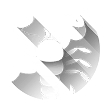

Скорпион
Октябрь 24 - Ноябрь 22
Есть пределы нашего сочувствия к тем, кто считает, что жизнь к ним несправедлива. Из-за этого они убеждают себя, что жизнь им что-то должна. Они не чувствуют себя обязанными прилагать усилия, чтобы получить то, что хотят или в чем нуждаются. Если Вам кажется, что дальнейшие усилия бесполезны, поймите, что Вы обязаны попробовать еще раз - ради себя.